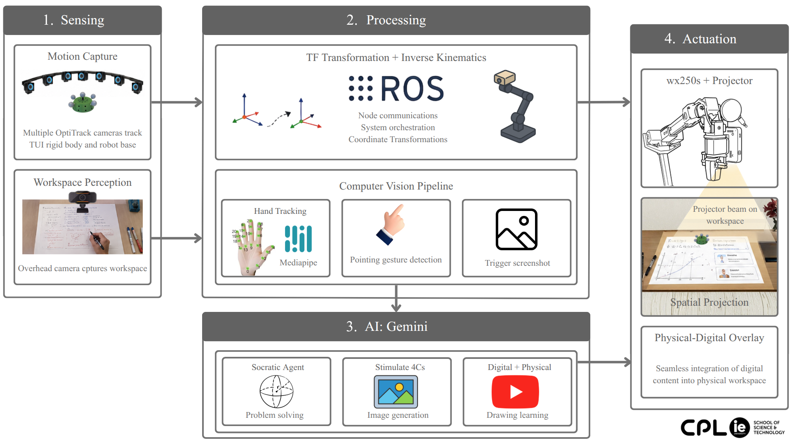
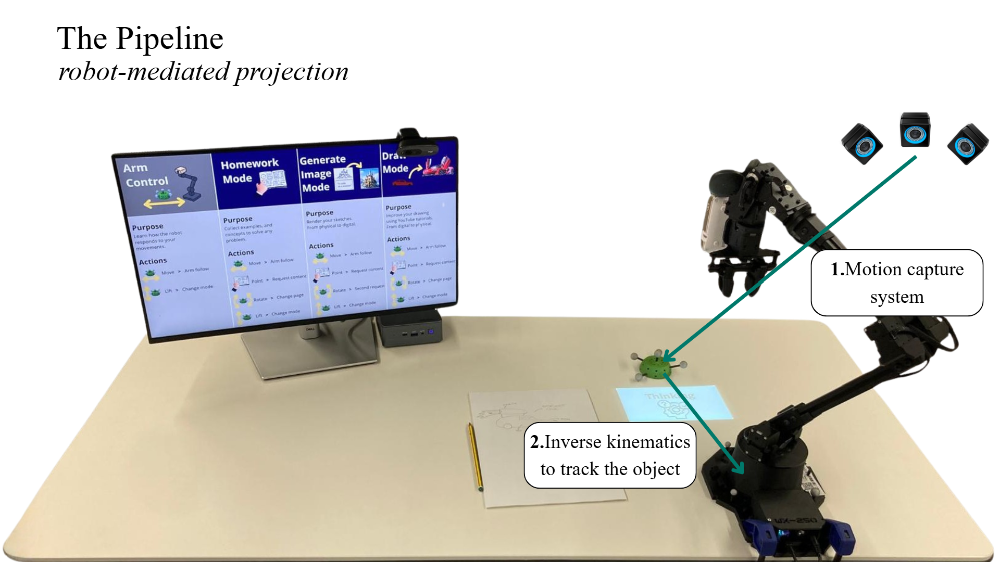
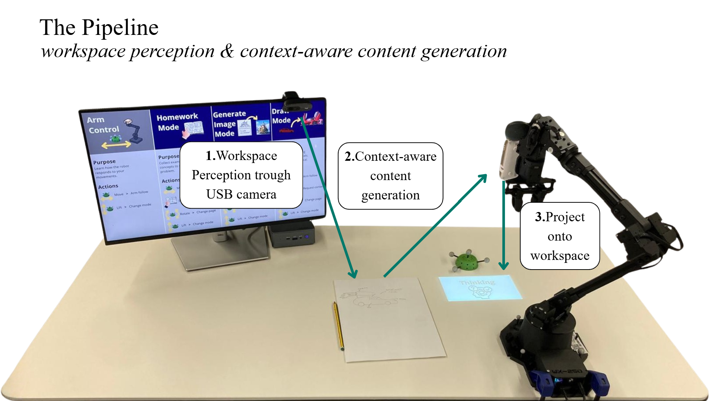

Workspace perception
An overhead camera captures the desk; a pointing gesture selects the region where assistance is needed.
Submitted to the IEEE International Conference on Robotics and Automation (ICRA 2027)
Desk-based learning and creative activities benefit from handwritten engagement, yet generative AI tools deliver guidance on a separate screen, creating a gap between where users think and where assistance appears. We present AIfred, a desk-based robotic arm with an end-effector-mounted projector that places AI-generated guidance alongside handwritten work. AIfred combines workspace perception, context-aware content generation, and robot-mediated projection to support math assignments, image generation, and drawing. In a user study (n = 36) comparing AIfred with ChatGPT (GPT-5.6 Luna) on a laptop, both systems performed comparably while assistance was available in the math assignment (6.7 vs. 7.3/10, p = .41), but AIfred yielded 60% higher short-term learning transfer once assistance was withdrawn (7.0 vs. 4.4/10, p = .003). Independent art and design professors ranked drawings produced with AIfred best in 33 of 36 cases. These findings indicate that spatially co-located AI assistance benefits tasks whose guidance shares a spatial frame with the work.
Many learning and creative activities unfold on paper at a physical desk, where handwriting encourages reformulation rather than passive transcription. Current AI tools, however, live on a screen: users must switch context between the paper they work on and the display where guidance appears.
AIfred closes this gap. It perceives the user's physical task, generates context-dependent support, and projects it back onto the desk, beside the work.

AIfred's spatial assistance pipeline turns a physical task into co-located guidance in three stages.
An overhead camera captures the desk; a pointing gesture selects the region where assistance is needed.
A multimodal model interprets the selected region under the active interaction mode and generates task-relevant guidance.
The robotic arm projects the guidance onto the desk at the location indicated by a tracked object.

A robotic arm carries a mini projector at its end-effector. An OptiTrack motion-capture system tracks the robot base and a trackable object that the user moves to choose where content appears; an inverse-kinematics solver then orients the projector toward that target at a fixed height above the desk. An overhead camera provides a top-down view of the task.

MediaPipe continuously tracks the user's hand; a pointing gesture triggers a capture of the selected region. The image and the active interaction mode are sent to Google's Gemini models (gemini-3.8-flash for scene understanding and reasoning, gemini-2.5-flash-image for image generation). Structured prompts favour scaffolding, such as hints, formulas, and analogous examples, over direct answers. Three modes are supported: math homework, image generation, and drawing.



Drag each divider to compare the user's physical input with the result obtained with AIfred.
 INPUT
INPUT AIFRED
AIFRED INPUT
INPUT AIFRED
AIFREDIn a mixed-design user study (n = 36), participants completed math, image-generation, and drawing tasks with either AIfred or ChatGPT (GPT-5.6 Luna) on a laptop.
With assistance withdrawn, math scores were 7.0/10 after AIfred vs. 4.4/10 after ChatGPT (p = .003).
Three independent art and design professors ranked AIfred-assisted drawings first in 92% of cases (Kendall's W = .86).
On average, 1 physical-digital switch with AIfred vs. 63 with ChatGPT, with no loss in perceived productivity (p = .61).